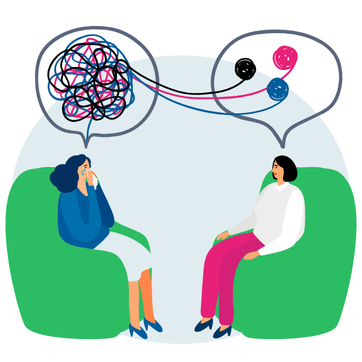

|
 |
¿Quiénes Somos?
¡Te queremos apoyar para que vivas Saludable-MENTE!
Somos un grupo encargado de concientizar sobre la comprensión y el acompañamiento de las necesidades psicológicas y la salud mental con pensamiento crítico, desde el reconocimiento de los problemas hasta el acompañamiento para su resol, para el desarrollo humano sostenible en el curso de la vida.

Puede ser muy angustiante que una persona diga que está teniendo pensamientos poco saludables para sí mismo y en atentar contra su propia vida, o notar indicios que demuestren que lo está considerando. Es posible que no sepas qué hacer para ayudar; si deberías hablar sobre el tema con seriedad o si tu intervención podría empeorar la situación. Te invitamos a que recomiendes nuestros servicios de ayuda para las personas que te rodean o para que lo uses personalmente de manera preventiva.
¡Tomar medidas siempre es la mejor opción!